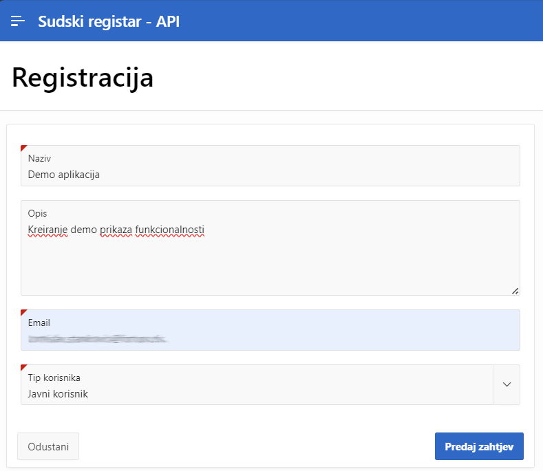
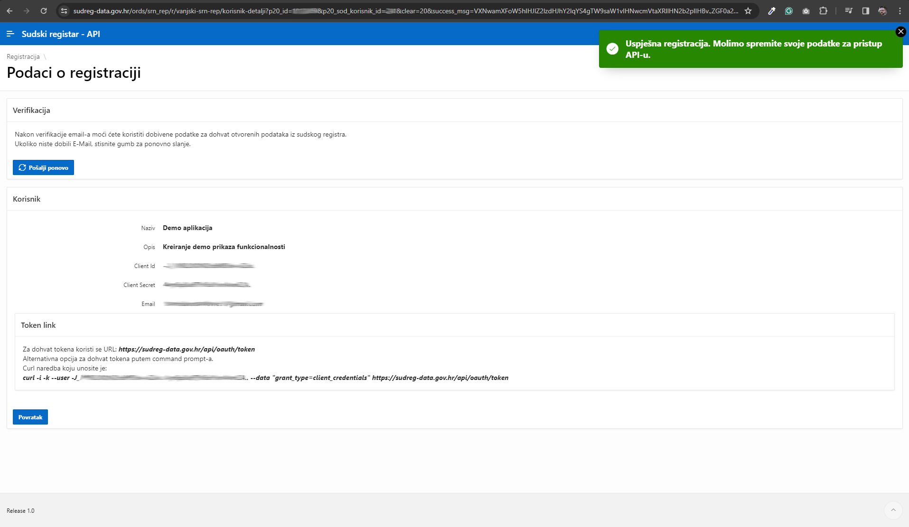
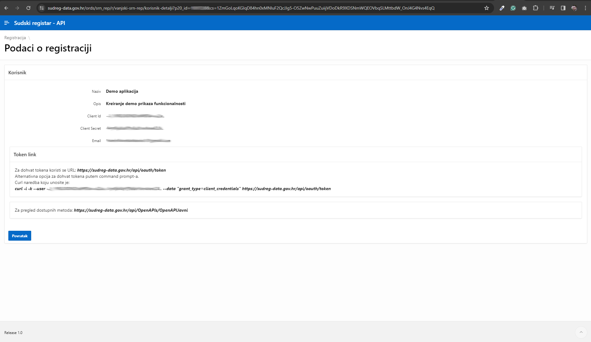

Web scraping is a technique used to extract information from websites. This tutorial demonstrates how to scrape web data in R using packages like rvest and httr. There is some difference between web crawling and web scraping. Web crawling is the process of automatically collecting information from the web, while web scraping is the process of extracting specific information from websites. but this distinctions is not always clear and not important for us right now.
Web APIs are a way to access data from websites and online services. They allow you to interact with websites programmatically, rather than through a web browser. When a website or online service provides an API, it means that they have made it possible for developers to access their data in a structured and controlled way.
Web scraping vs. APIs
Why does web scraping exist if APIs are so powerful and do exactly the same work?
The main difference between web scraping and using APIs is that APIs are typically provided by the website or service to allow access to their data, while web scraping involves accessing data without the explicit permission of the website owner.
This means that using APIs is generally considered more ethical than web scraping, as it is done with the explicit permission of the website or service.
However, there are also some limitations to using APIs:
many APIs have rate limits, which means that they will only allow a certain number of requests to be made within a certain time period, i.e. you may not access large amounts of data;
not all websites or online services provide APIs, which means the only way to access their data is via web scraping.
Ethical and legal considerations
It is important to note that web scraping can raise ethical concerns, as it involves accessing and using data from websites without the explicit permission of the website owner. It is a good practice to respect the terms of use for a website, and to seek written permission before scraping large amounts of data.
Just because you can scrape it, doesn’t mean you should. A computer can process commands much, much faster than we can ever type them up manually. It’s pretty easy to write up a function or program that can overwhelm a host server or application through the sheer weight of requests. Or, just as likely, the host server has built-in safeguards that will block you in case of a suspected malicious attack.
Prerequisites
Before starting, ensure you have the following R packages installed:
Environment variables are useful for keeping sensitive information out of your scripts and code files, promoting better security and portability. These variables are often used to store:
API keys or tokens for accessing external services.
File paths or directory locations.
Configuration settings for R packages.
The .Renviron file is a plain text file where you can define environment variables. It is loaded when R starts, and any variables defined in it are available throughout the R session.
Benefits of .Renviron:
Keeps sensitive information like API keys secure.
Prevents hardcoding sensitive values into scripts.
Enables consistent environment variable settings across sessions.
Once defined in .Renviron, you can access them in R using the Sys.getenv() function:
# Accessing the API_KEY environment variableapi_key <-Sys.getenv("API_KEY")
The last important thing is to add .Renviron file to your .gitignore file. This will prevent you from accidentally committing sensitive information to your repository.
Web API’s
What is an API?
In nutshell, API is really just a collection of rules and methods that allow different software applications to interact and share information. This includes not only web servers and browsers, but also software packages like the R libraries
Types of APIs
There are several types of APIs, including:
Web APIs: These are APIs that are accessed over the internet using HTTP requests. They are commonly used to access data from online services, such as social media platforms, weather services, and financial services.
Library APIs: These are APIs that are provided by software libraries to allow developers to access the functionality of the library in their own code.
Operating System APIs: These are APIs that are provided by operating systems to allow developers to access the functionality of the operating system in their own code.
How to use an API
To use an API, you need to know the following:
The base URL of the API: This is the URL that you use to access the API.
The endpoints of the API: These are the URLs that you use to access specific resources or data from the API.
The methods of the API: These are the HTTP methods that you use to interact with the API, such as GET, POST, PUT, and DELETE.
The parameters of the API: These are the parameters that you use to specify the data that you want to access from the API.
To use an API, you typically send an HTTP request to the API with the appropriate method, endpoint, and parameters, and the API will respond with the data that you requested.
Examples of APIs
There are many APIs available that provide access to a wide range of data and services. Some examples of APIs include:
The Twitter API: This API allows you to access data from Twitter, such as tweets, users, and trends.
The OpenWeatherMap API: This API allows you to access weather data from around the world.
The Google Maps API: This API allows you to access maps and location data from Google Maps.
API keys
Many APIs require you to use an API key to access the data. An API key is a unique identifier that is used to authenticate your requests to the API. You typically need to include your API key in the request to the API, either as a query parameter, a header, or in the request body.
To get an API key, you usually need to sign up for an account with the service that provides the API, and then generate an API key in your account settings.
A bit more about API endpoints
A key point in all of this is that, in the case of web APIs, we can access information directly from the API database if we can specify the correct URL(s). These URLs are known as an API endpoints.
API endpoints are in many ways similar to the normal website URLs that we’re all used to visiting. For starters, you can navigate to them in your web browser. However, whereas normal websites display information in rich HTML content — pictures, cat videos, nice formatting, etc. — an API endpoint is much less visually appealing. Navigate your browser to an API endpoint and you’ll just see a load of seemingly unformatted text. In truth, what you’re really seeing is (probably) either JSON (JavaScript Object Notation) or XML (Extensible Markup Language).
You don’t need to worry too much about the syntax of JSON and XML. The important thing is that the object in your browser — that load of seemingly unformatted text — is actually very precisely structured and formatted. Moreover, it contains valuable information that we can easily read into R (or Python, Julia, etc.) We just need to know the right API endpoint for the data that we want.
Let’s practice doing this through a few example applications. I’ll start with the simplest case (no API key required, explicit API endpoint) and then work through some more complicated examples.
Court Registry (Sudski registar) API
The docs for Court Registry API is available here. Here are detaile desctiption for developers. Finally, here you can see all available endpoints. These are all in Croatian, but you can easly translate it to English. Before you can use the API, you should register (enter name, e-mail and type of user) and get you API key.

Court Registry API forma png
After you click on “Predaj zahtjev” the new page will show you the following:

Court Registry API podaci png
You can see the detail like Client Id and Client Secret. You will need thos to get the token and send request to Court Registry API.
Before, you can use the API, you should confirm your e-mail. E-mail looks like this
Court Registry API email png
To finally finish the registration, you should click on activate. Here is how page looks like:
Court Registry activation png
Your credentials are now activated and you can use the API. Here are API data redy to use:

Court Registry API email png
Let’s see how we can use the API in R.
First. we sill need to import the package we sill use and get API token we will use later in our requests. You will have to use token url and some creditential data. It is best to save thin in .Renviron file as we explained in the introduction.
Since the first part of URL is always the same when sending requests, we wil save it in URL varaible.
library(httr)library(data.table)
Warning: package 'data.table' was built under R version 4.4.2
# Define token_url ="https://sudreg-data.gov.hr/api/oauth/token"user_name =Sys.getenv("USER_SREG")pass =Sys.getenv("PASS_SREG")# Get Token following the documentationtoken =POST( token_url,authenticate(user_name, pass),body =list(grant_type ="client_credentials"),encode ="form", httr::config(ssl_verifypeer =FALSE))token =content(token)print(token)
GET function is used to send a GET request to the API endpoint. The first argument is the URL of the endpoint we want to access.
The add_headers function is used to add the Authorization header to the request, which includes the access token we received when we authenticated with the API.
The Content-Type header specifies that the content type of the request is JSON.
The query argument is used to specify the query parameters of the request, which in this case include the limit and only_active parameters.
content function is used to extract the content of the response, which is the data that the API returns.
Now, we would like to clean the data. We want to have data.frame or data.table, not the lists. Here is how can we do tha very simepl using data.table package.
# Convert all list elements to data.tableres_clean =lapply(res, as.data.table)# Rbind all elementsres_clean =rbindlist(res_clean, fill =TRUE)head(res_clean)
mbs status sud_id_nadlezan sud_id_sluzba postupak ino_podruznica
<int> <int> <int> <int> <int> <int>
1: 10000015 0 1 1 1 0
2: 10000023 0 1 1 1 0
3: 10000031 0 1 1 1 0
4: 10000040 0 1 1 1 0
5: 10000058 0 1 1 1 0
6: 10000066 0 1 1 1 0
stecajna_masa likvidacijska_masa datum_osnivanja datum_brisanja
<int> <int> <char> <char>
1: 0 0 1995-05-10T00:00:00 2002-08-23T00:00:00
2: 0 0 1994-03-11T00:00:00 2002-07-02T00:00:00
3: 0 0 1995-05-12T00:00:00 2012-09-10T00:00:00
4: 0 0 1995-05-12T00:00:00 2012-09-10T00:00:00
5: 0 0 1995-05-12T00:00:00 2012-09-10T00:00:00
6: 0 0 1995-05-12T00:00:00 2002-09-09T00:00:00
sud_id_brisanja
<int>
1: 1
2: 1
3: 1
4: 1
5: 1
6: 1
tvrtka_kod_brisanja
<char>
1: DESANTI društvo s ograničenom odgovornošću za trgovinu
2: CROMAX mesna industrija d.d. - u stečaju
3: VELEPROMET d. o. o. za trgovinu na veliko i malo
4: PRELEC društvo s ograničenom odgovornošću za trgovinu i promet
5: EMINA društvo s ograničenom odgovornošću za trgovinu i usluge
6: TRGOMEDIK društvo s ograničenom odgovornošču za trgovinu i usluge
poslovni_broj_brisanja oib mb glavna_djelatnost
<char> <num> <int> <int>
1: Tt-02/914-2 NA NA NA
2: Tt-02/596-1 NA NA NA
3: Tt-12/74-54 66580390814 1083333 NA
4: Tt-12/74-43 55543222548 1095315 NA
5: Tt-12/74-13 22763783463 1085484 NA
6: Tt-02/1029-2 NA NA NA
We can write a function to make above steps easier. Here is how we can do that:
# Wrap for GET request to court registryget_sreg_url =function(url) { res =GET(url,add_headers("Authorization"=paste0("Bearer ", token$access_token),"Content-Type"="application/json"))return(content(res))}# Wrap for GET request to court registryget_sreg =function(tag, q =list(limit =100, only_active =TRUE), clean =TRUE) { url =modify_url(paste0(URL, tag),query = q )# Make GET request cont =get_sreg_url(url)# Clean if neededif (clean ==TRUE) {return(rbindlist(cont, fill =TRUE)) } else {return(cont) }}
Now, we can use this function to get data from Court Registry API. Here is how we can do that:
# Get data from court public registrysubjects =get_sreg("subjekti")head(subjects)
mbs djelatnost_rbr
<int> <int>
1: 10000074 20
2: 10000074 21
3: 10000074 22
4: 10000074 24
5: 10000074 25
6: 10000074 26
djelatnost_tekst
<char>
1: Provodi specifičnu preventivnu zdravstvenu zaštitu djece i mladeži, osobito u osnovnim i srednjim školama, te fakultetima na svom području
2: Prati, proučava, evaluira i izvješćuje o zdravstvenim potrebama i funkcionalnoj onesposobljenosti starijih ljudi te predlaže zdravstvene mjere za svoje područje
3: Prikuplja, kontrolira i analizira statistička izvješća iz područja zdravstva uključujući bolesti ovisnosti, na svom području za potrebe Hrvatskog zavoda za javno zdravstvo
4: Kontinuirano provodi mjere higijensko-epidemiološke zaštite s epidemiološkom analizom stanja na području županije i po potrebi provodi protuepidemijske mjere te nadzire provođenje obveznih imunizacija
5: Analizira epidemiološko stanje, planira, predlaže i sudjeluje u provođenju mjera i aktivnosti za sprječavanje, rano otkrivanje i suzbijanje bolesti ovisnosti
6: Surađuje sa zdravstvenim i drugim ustanovama i zdravstvenim radnicima u provedbi dijagnostike i liječenja bolesti ovisnosti te rehabilitacije i društvene integracije ovisnika
nacionalna_klasifikacija_djelatnosti_id
<int>
1: NA
2: NA
3: NA
4: NA
5: NA
6: NA
mbs djelatnost_rbr
<int> <int>
1: 10000363 1
2: 10000363 2
3: 10000363 3
4: 10000363 4
5: 10000363 5
6: 10000363 6
djelatnost_tekst
<char>
1: Umnožavanje snimljenih zapisa
2: Proizvodnja aparata za kućanstvo
3: Proizvodnja uredskih strojeva i računala
4: Proizvodnja električnih strojeva i aparata
5: Trgovina motornim vozilima; popravak mot. vozila
6: Trgovina na veliko i posredovanje u trgovini, osim trgovine motornim vozilima i motociklima
# Short nameshort_names =get_sreg(tag ="evidencijske_djelatnosti")head(short_names)
mbs djelatnost_rbr
<int> <int>
1: 10000363 1
2: 10000363 2
3: 10000363 3
4: 10000363 4
5: 10000363 5
6: 10000363 6
djelatnost_tekst
<char>
1: Umnožavanje snimljenih zapisa
2: Proizvodnja aparata za kućanstvo
3: Proizvodnja uredskih strojeva i računala
4: Proizvodnja električnih strojeva i aparata
5: Trgovina motornim vozilima; popravak mot. vozila
6: Trgovina na veliko i posredovanje u trgovini, osim trgovine motornim vozilima i motociklima
# Get data from court public registry in a loopget_sreg_loop =function(tag ="subjekti", by =10000) {# Define offsets offset_seq =seq(0, 360000, by = by) offset_seq =format(offset_seq, scientific =FALSE) offset_seq =gsub("\\s+", "", offset_seq)# Define urls urls =lapply(offset_seq, function(x) {modify_url(paste0(URL, tag),query =list(offset = x,limit =format(by, scientific =FALSE),only_active =FALSE ) ) }) res_l =lapply(urls, get_sreg_url) res_l = res_l[!sapply(res_l, function(x) length(x) ==0)] res_l =lapply(res_l, function(l) rbindlist(lapply(l, as.data.table), fill =TRUE))rbindlist(res_l, fill =TRUE)}# # Business subjects# subjects = get_sreg_loop("subjekti")
Let’s check if everything is working
Web scraping
Web pages
Almost anyone is familiar with web pages (otherwise you would not be here), but what if we tell you that how you see a site is different from how Google or your browser does?
In fact, when you type any site address in your browser, your browser will download and render the page for you, but for rendering the page it needs some instructions.
There are 3 types of instructions:
HTML: describes a web page’s infrastructure; CSS: defines the appearance of a site; JavaScript: decides the behavior of the page. Web scraping is the art of extracting information from the HTML, CSS and Javascript lines of code. The term usually refers to an automated process, which is less error-prone and faster than gathering data by hand.
I want to forewarn you that webscraping typically involves a fair bit of detective work. You will often have to adjust your steps according to the type of data you want, and the steps that worked on one website may not work on another. (Or even work on the same website a few months later). All this is to say that webscraping involves as much art as it does science.
The good news is that both server-side and client-side websites allow for webscraping.1 If you can see it in your browser, you can scrape it.
HTML and CSS
Before starting it is important to have a basic knowledge of HTML and CSS. This section aims to briefly explain how HTML and CSS work
Starting from HTML, an HTML file looks like the following piece of code.
<!DOCTYPE html><html lang="en"><body><h1 href="https://en.wikipedia.org/wiki/Carl_Friedrich_Gauss"> Carl Friedrich Gauss</h1><h2> Biography </h2><p> Johann Carl Friedrich Gauss was born on 30 April 1777 in Brunswick. </p><h2> Profession </h2><p> Gauss is considered as one of the greatest mathematician, statistician and physicist of all time. </p></body></html>Those instructions produce the following:
As you read above, HTML is used to describe the infrastructure of a web page, for example we may want to define the headings, the paragraphs, etc.
This infrastructure is represented by what are called tags (for example
…<> or
…<> are tags). Tags are the core of an HTML document as they represent the nature of what is inside the tag (for example h1 stands for heading 1). It is important to observe that there are two types of tags:
starting tags (e.g.
) ending tags (e.g. <>) This is what allows to nest different tags.
Tags can also have attributes, for example in <h1 href=“https://en.wikipedia.org/wiki/Carl_Friedrich_Gauss”Carl Friedrich Gauss
, href is an attribute of the tag h1 that specifies an URL.
As the output of the above HTML code is not super elegant, CSS is used to style the final website. For example CSS is used to define the font, the color, the size, the spacing and many more features of a website.
What is important for this article are CSS selectors, which are patterns used to select elements. The most important is the .class selector, which selects all elements with the same class. For example the .xyz selector selects all elements with class=“xyz”.
Footnotes
As we’ll see during the next lecture, scraping a website or application that is built on a client-side (i.e. API) framework is often easier; particularly when it comes to downloading information en masse.↩︎